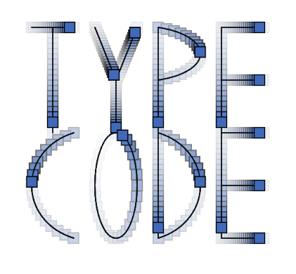
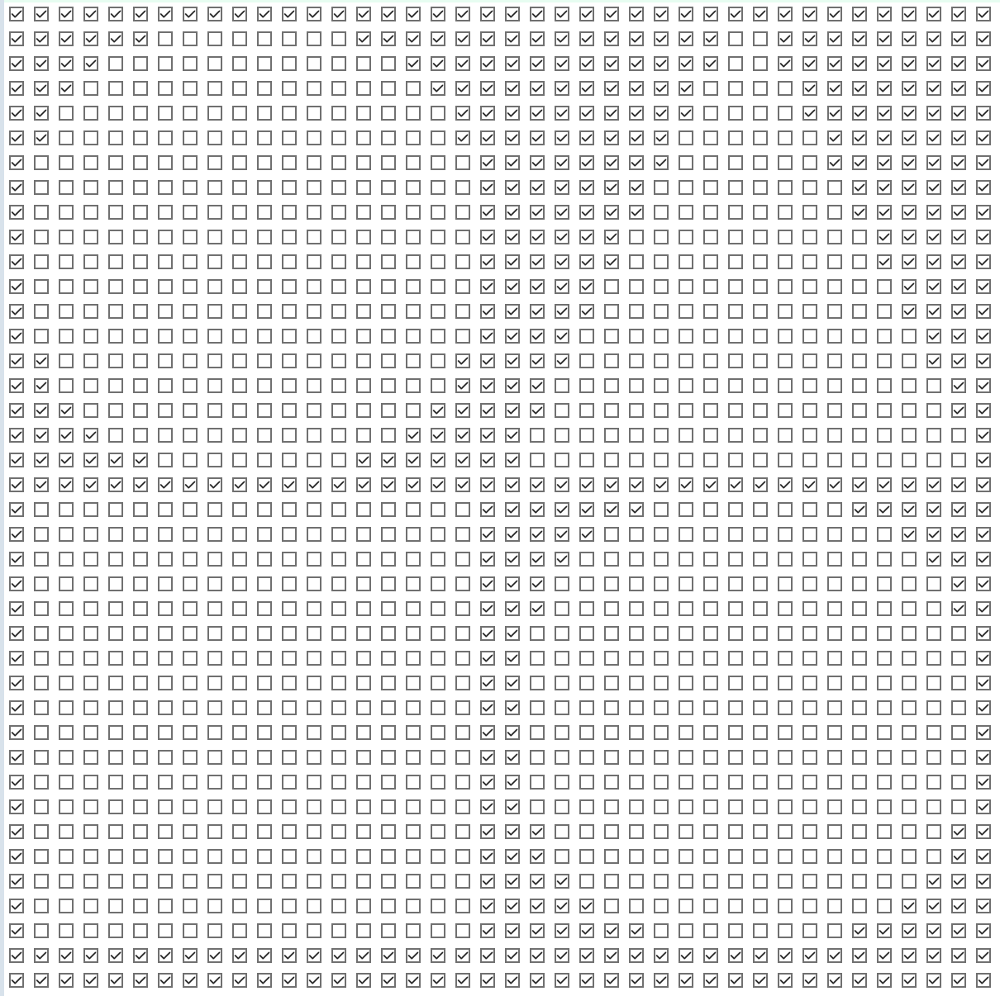

Experiment 6: Grammars & Text Art
Imitate
I decided to Imitate this text effect:
http://www.generative-gestaltung.de/2/sketches/?01_P/P_3_2_5_02
Here is my version:
https://editor.p5js.org/coco558/sketches/h8EXzCXhz
I decided to just generally imitate it and not copy it exactly. One of the reasons I did this was because I wanted to use the text function rather than use my own font like the example does. I manually drew lines down the center of the characters using a tool I made. I also made a line function that had the moving dot effect on it. I then could simply combine these to get the final effect.
Integrate
I decided to integrate this into a grid like this example:
http://www.generative-gestaltung.de/2/sketches/?01_P/P_2_1_4_01
Here is my version:
https://editor.p5js.org/coco558/sketches/5eCzvuLF6
For the integration I added the ability to make multiple characters have the effect. I could make the effect happen with pretty much any text I wanted as long as I set it up first.
Innovate
For innovation, I made the letters link up at their ends to create a network of lines:
https://editor.p5js.org/coco558/sketches/urgBDym8m
I used the already made lines from the letters to find connection points between letters. I choose a rondom point to connect a new letter to and then add it. I add a bunch of letters each frame and I slowly fade old letters using the background.
Reflection
I did not get as far as I wanted to in this experiment because I was overloaded with work from other classes. I wanded to make new letters only spawn when they dont collide with already created letters. I wrote code to do this but I didnt have time to ignore collistions with the point a new letter is spawned from. I could probably do this if I had more time. I hope that I can revisit this project later when I have more time.